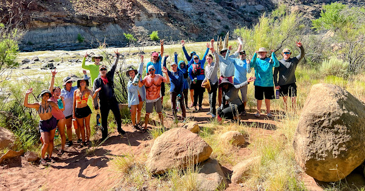

Home
Games
Menu
Cook Team
Hawaiian Lunacy Game
Here is the character list for our mystery party. Prizes for best costume and the first person to figure out who committed the crime.
- Beachie
I’m a female world championship surfer. I’ve won it so
many times; I’ve almost lost count. I have a holiday house on the Big
Island. I am a pretty tough woman. You have to be to surf as you have
to fight for each wave with a bunch of guys.
- Brad
I’m a lifeguard at the beach. In my spare time, I go bike riding
and play the ukulele. I like the fact that the ukulele was invented in
Hawaii and that it means “jumping fleas” and people called it that
because the musician’s fingers flew about like fleas on it.
- Kainoa (pronounced Ki-no-uh)
I have a macadamia nut farm in
Kona. I also grow some coffee beans on it. Although macadamias are
native to Australia, most people mistakenly believe they are native to
Hawaii. I don’t mind because we sell a lot at the airport. I have a stand
near the highway so I also sell to tourists. The tour buses stop at it. I
lay on my Hawaiian accent for the tourists and I try to be as much of a
character as I can be by calling everyone sista, bro, auntie, or uncle.
- Tanya
I’m a seismologist and I’m proud of it. People sometimes get
a tremor when I’m around – only joking. I spend a lot of time
monitoring the volcano we have here. I’m from mainland USA but I
have made Hawaii my base.
- Penny
I climb coconut palms and de-nut them so they don’t drop on
tourists’ heads when they go to the beach. At the markets, I sell fresh
green coconuts for people to drink.
- Mango Man
I’m well-known identity and I live in the rainforest. No
one knows exactly where. I walk to town most days. I live off the land,
but sometimes when the fruit isn’t ripe I go to the Church soup kitchen.
Some people think I have eaten their dog, but that isn’t true.
